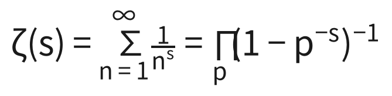
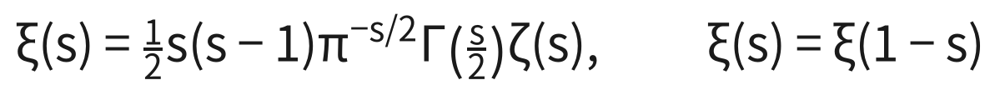
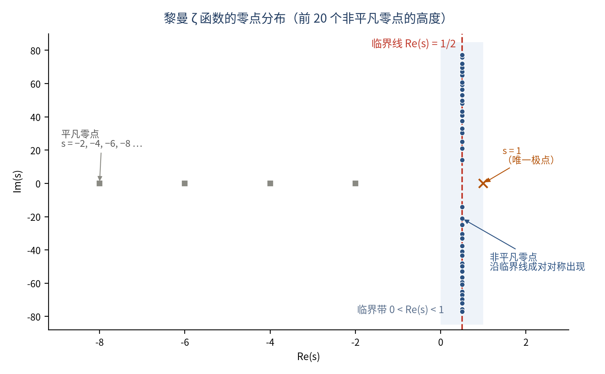
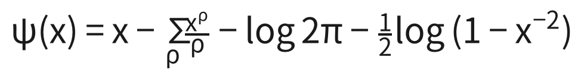
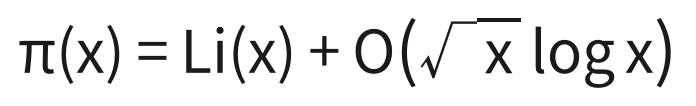
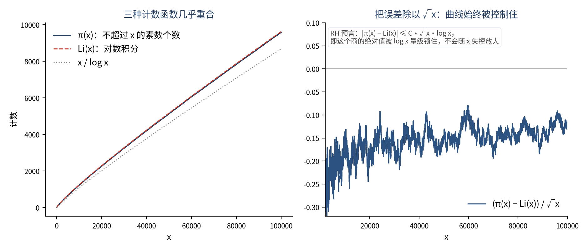
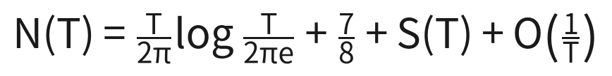
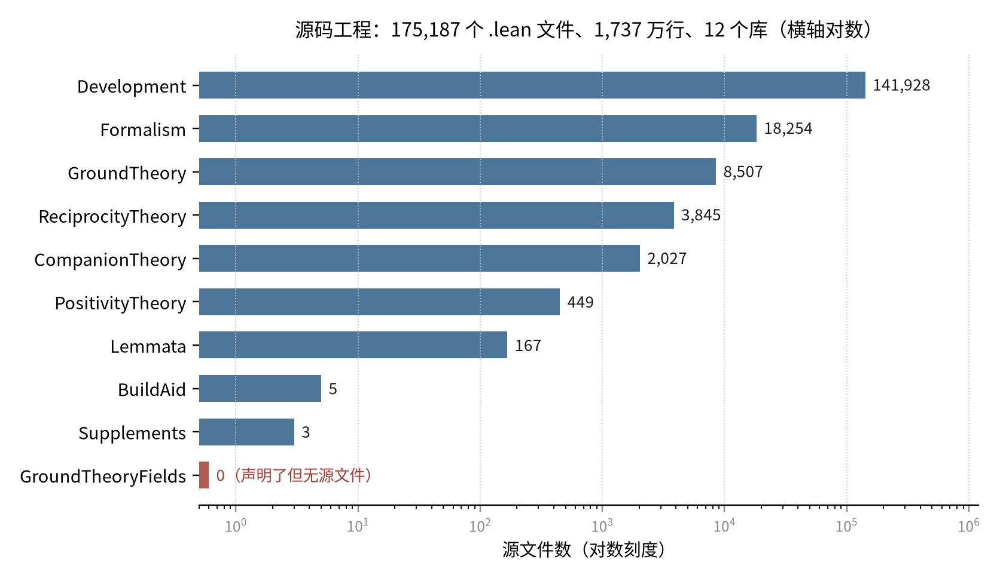
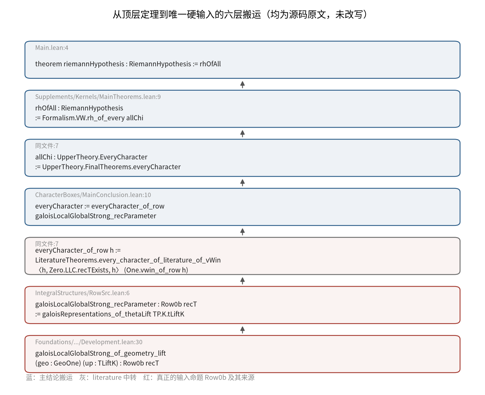
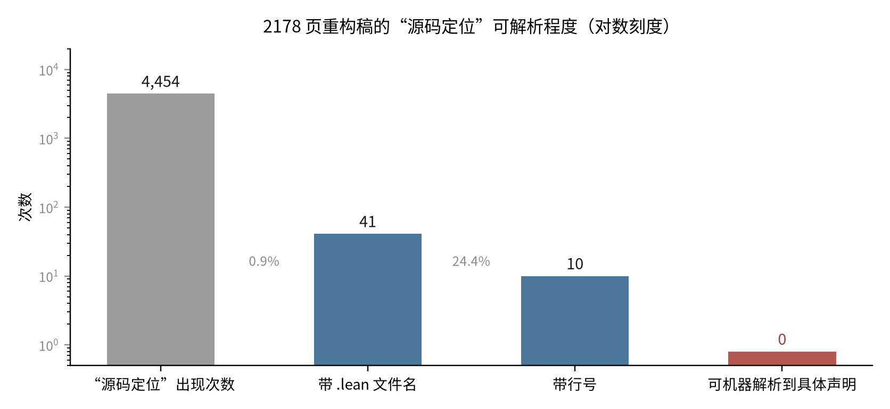

阅读指引
这本书把三份材料装进同一册：第一部是对 Alpöge 那 4 页宣告的逐段译注与背景导读，第二部是对“2178 页中文重构稿”的可信度评估，第三部是那份重构稿的全文影印。前两部统一了章号（第 1–9 章、第 10–20 章）、图号（图 1–5）与版式；第三部保留原书版式与页码，只在外框、目录与页眉上接入本书。
第三部没有重排正文，原因写在它自己的说明页：那份稿子的公式是 Computer Modern 字形按矢量排出来的，从 PDF 抽取文本只能得到零碎符号（q^d−1 = Σ … 会散成若干行），任何“重排”都会把数学毁掉。要真正重排，需要 LaTeX 源码，而目前只有成品 PDF。因此这里做的是“可核查的整合”：原页一页不动，页码、公式、断行全部保留，外加上本书的部扉页、使用说明与重排过的分卷目录。
两部分回答的是两个不同的问题。第一部回答“宣告说了什么”——它把 4 页原文拆成段落对照，并补上读懂它所需的背景：黎曼猜想到底是什么、167 年里有哪些人试过、五条路线各自卡在哪里。第二部回答“支撑它的材料有多硬”——把 239 MB 源码解开，核对重构稿引用的文件、行号与结构，判定哪些是假设、哪些能被外部验证。
三条阅读路径
- 只想知道黎曼猜想是什么：读第 1–3 章，约 8 页，不需要任何前置知识。
- 只想知道这份重构稿靠不靠谱：直接读第 10 章（结论先行）与第 20 章（评级），再回看第 15 章（引用审计）。
- 想自己动手验证：读第 12–14 章（源码结构、主链、literature 结构），然后照第 19 章的三条命令执行。
体例
- 图 1–5 全书连续编号；第一部 2 张（零点分布、素数计数误差），第二部 3 张（工程规模、主链、引用漏斗）。
- 第一部正文中的“原文页码”指
alpo.ge/remark.pdf的页序；第二部中的“p349”“p2178”与第三部页脚的页码，均指那份 2178 页 PDF 的页序，两者不通用。 - 第三部不参与本书连续编页：它的页码沿用原书（页脚数字），页眉另标“原书 p.N”，以免第二部里“见第 349 页”这类引用失效。
- 第二部凡称“重构稿”，均指《广义黎曼猜想证明（未简化 2000 页）.pdf》（实际 2178 页）；凡称“源码”，均指 alpo.ge 发布的 14 个 Lean 分卷。
- 第 1 章 什么是黎曼猜想
- 第 2 章 来源与发展历程
- 第 3 章 历史上的探索路线
- 第 4 章 本次宣告的方法主线流程图
- 第 5 章 第 1 页：宣告与核心思路
- 第 6 章 第 2 页：公布时机、公开范围与致谢
- 第 7 章 第 3–4 页：20 步工作时间线
- 第 8 章 关键术语小词典
- 第 9 章 脚注原文与译注
说明：第一部的章节编号、图表编号沿用其独立成书时的体系，仅调整为本书的第 1–9 章。
导读说明
这一部的正文是翻译与导读，不是论证。为便于核对，原文英文整段保留并与中译逐段并置；术语首次出现时保留英文原词；公式一律以图片形式保留原样，未作改写或重新推导；脚注编号沿用原文的 1–7。凡属导读性质的补充（第 1–4、8 章）均在文中标明“不属于原文”。
材料与版本
阅读提示
- 本文档是对作者 4 页宣告性短文的逐段翻译与导读，不是证明论文，也不包含证明的完整数学推导。
- 作者公开的正式产物仅有 Lean 4 形式化代码；完整自然语言证明稿（作者估计 25 万页以上）未公开。
- 机器形式化编译通过，只代表代码在 Lean 公理系统内逻辑自洽；不等于数学界已理解、复核并公认该证明，克雷千禧年大奖亦未认定。
- 作者本人在文中明确表示：自己尚未掌握论证周围大片数学，论证中可能混入大量次优选择，预计很快会出现更简短的证明。
- 译文为辅助理解之用；术语、符号与结论以原文及 Lean 代码为准。
第 1 章 什么是黎曼猜想
以下三章为导读性背景补充，不属于 Alpöge 原文，目的是让读者在进入译文前先建立坐标系。
这句话看起来像一句复分析的技术断言，但它等价于“素数个数的分布误差被 √x 量级牢牢锁住”——也就是数论里最核心的一条精度要求。
1.1 一个能“数素数”的函数
1737 年，欧拉注意到一件事：把所有正整数的倒数幂加起来，等于对所有素数的某个乘积。

左边是“所有正整数”的求和，右边是“所有素数”的乘积。这一步的意义在于：素数本来是一堆散落、无法用公式直接描述的整数，一旦被写成乘积的因子，就可以对它求对数、求导、做解析延拓——素数分布从此变成一个解析对象的性质。这是解析数论的开端。
1.2 1859 年：黎曼把 s 变成复数
欧拉只考虑实变量的 s（且要 Re(s) > 1 才收敛）。黎曼的改造是把 s 当作复变量，用解析延拓把 ζ 扩张到整个复平面——只在 s = 1 处留下一个单极点（这个极点对应“素数有无穷多个”）。延拓之后，ζ 满足一个关于 s = 1/2 对称的函数方程：

其中 ξ 是把 ζ 的极点与平凡零点“抹平”后的完整版本。注意 ξ(s) = ξ(1−s) 这条对称性：它意味着零点必须成对地关于临界线 Re(s) = 1/2 对称出现。"1/2" 这个数字第一次以结构性方式进入这个问题，不是巧合，也不是审美偏好，而是函数方程强加的。
1.3 三类零点，一张图看清
- 平凡零点：s = −2, −4, −6, …，全部落在实轴上，由 Γ 因子的极点被 ζ 抵消造成，位置完全已知、不构成困难。
- 非平凡零点：位于“临界带” 0 < Re(s) < 1 内，关于实轴成对共轭、也关于临界线成对对称。黎曼猜想说的就是这一批。
- 极点：s = 1，唯一一个，对应素数无穷多。

1.4 它为什么等价于“素数个数的误差控制”
这是整个问题的技术核心，也是它值得被列为千禧年难题的原因。黎曼给出的显式公式把“素数的计数”直接展开成“零点之和”：

（ψ(x) 是冯·曼戈尔特函数，按素数幂 pk ≤ x 加权 log p 累计；ρ 遍历全部非平凡零点。）主项是 x，也就是“素数按密度 1/log x 均匀铺开”的平滑部分；每一项 xρ/ρ 则是一次振荡。关键在于振荡的幅度：
如果所有 Re(ρ) = 1/2，每次振荡的幅度就是 √x，误差被压在平方根量级；只要有一个零点跑到 Re(ρ) = 1/2 + δ，它的幅度立刻变成 x1/2+δ——放大 xδ 倍。所以“实部是不是 1/2”不是品味问题，而是素数计数误差的数量级问题。冯·科赫 1901 年证明了两者严格等价：


1.5 三个常见误解
误解一：黎曼猜想是说“素数有规律”。它是一条精确的复分析命题，不是模糊的直觉。真正被断言的是“零点实部的一个具体数值”，而不是“素数排布好看”。
误解二：“已经验证了十万亿个零点，所以基本成立”。数值验证不构成证明。1914 年利特尔伍德已经证明 π(x) − Li(x) 一定会变号（即 Li(x) 并非永远高估），但最早的显式上界大到 1010964 这种量级，此后逐步降到 10316 上下，而实际计算到 1019 仍未发现第一个变号点。这说明“反例可能存在，但远在任何可计算范围之外”——计算的规模永远追不上无穷。
误解三：“已经证明了”。截至 2026 年 11 月，数学界没有公认任何完整证明。Alpöge 这份材料的状态是：Lean 形式化代码可通过机器核验，但自然语言论证未公开、同行尚未理解与复核，这与“定理已确立”是两个不同阶段。
第 2 章 来源与发展历程
2.1 1859 年那篇 8 页论文
黎曼在 1859 年 11 月向柏林科学院提交了一篇只有 8 页的论文，德文标题是《Ueber die Anzahl der Primzahlen unter einer gegebenen Grösse》（论不超过给定大小的素数个数）。这篇短文做了五件事，每一件都改变了此后的数论：
1.把 ζ 视为复变量函数，并给出它的解析延拓；
2.导出函数方程 ξ(s) = ξ(1−s)，确立 s = 1/2 的对称地位；
3.给出零点计数公式，估计高度 T 以下有多少个零点：

4.写下那句后来成为猜想的话：大意是“极可能所有（ξ 的）根都是实的”——在 ξ 的变量下，这正是 Re(s) = 1/2；
5.用零点之和显式表达素数计数函数，即所谓“黎曼的音乐”：每一个零点是一根弦上的一个音，素数分布的每一次抖动都是这些音叠加的结果。
值得强调的是：黎曼本人只手工算了几个零点，全部落在临界线上。他既没有试图证明，也没有给出反例——他把一个结构性猜想留在了这篇短文的末尾，然后转向其他课题。
2.2 一条 167 年的时间线
2.3 三次结构性转折
1896 年素数定理：第一次真正实现“从 ζ 的性质推出素数分布”，证明了解析方法的合法性。它也定下了一个范式：想推进素数分布，就去研究零点位置。
1940 年代函数域：韦伊在另一类对象（有限域上的曲线）上证明了对应命题。这个平行世界里有几何：曲线、除子、Frobenius 自同构、上同调。于是“黎曼猜想”在那里不再是猜想，而是定理。此后所有“类比路线”（包括本文这条）都以它为模板。
1970 年代随机矩阵：蒙哥马利发现零点的对关联函数与随机厄米矩阵（GUE）的特征值统计一致。这暗示零点可能是某个自伴算子的谱，但至今没人造出这个算子。它改变了问题的面貌，却没有改变问题的难度。
第 3 章 历史上的探索路线
3.1 五条路线总览
3.2 每条路线做了什么，卡在哪里
A · 解析估计。这是最正统的一条。它不去构造零点，而是估计“能有多少零点偏离临界线”。哈代 1914 证明临界线上有无穷多零点；塞尔伯格 1942 把“无穷多”升级成“占正比例”；莱文森 1974 得到 1/3；康雷 1989 得到 2/5。每一步都是把比例往前推一点，代价是技术复杂度指数上升。卡点：这些方法本质上是“平均”层面的估计——能证明绝大多数零点在线上，却无法排除极少数跑到线外，而黎曼猜想要求的恰恰是“一个都不能跑”。
B · 数值验证。西格尔 1932 从黎曼手稿里整理出 Riemann–Siegel 公式，让计算零点变成可执行的算法；此后 Gram 点、图灵 1953 的机器验证方法、直到今天的分布式计算，把验证推进到前 1013 个零点与高度 3×1012。卡点：验证只能覆盖有限范围，而命题是全称的。高度每提高一个数量级，计算量增长远超线性；这条路能提供信心，不提供证明。
C · 谱与算子。Hilbert–Pólya 猜想认为零点是一族自伴算子的特征值，自伴性直接强制特征值取实数值，从而给出 Re = 1/2。Berry–Keating 用量子混沌的 Hamiltonian 做了启发式构造；Connes 用非交换几何与迹公式给出另一套框架。卡点：至今没有人写出这个算子。随机矩阵类比能解释零点的统计分布，却解释不了“为什么恰好是 1/2”——统计吻合和精确取值是两回事。
D · 函数域类比。这是唯一在“平行世界”里真正成功的一条。韦伊 1948 用代数几何证明曲线情形的 RH；斯捷潘诺夫 1969 给出一个初等证明（用带重数的除子做多项式构造）；邦别里 1974 简化；德利涅 1974 用 Weil 猜想把结论推到高维。卡点：函数域有曲线、除子、导子、Frobenius、上同调——一整套几何工具；整数环上没有对应物。要把这套论证搬回数域，等于在缺少几何的世界里手工造出几何。Alpöge 的整篇短文，就是在做这件事：用 theta 提升链去“模拟”函数域里那个现成的重数。
E · 等价判据。把猜想改写成别的形式，希望其中某个形式更容易攻。最常用的几个：
| 判据 | 内容（均与 RH 等价） | 出处 |
|---|---|---|
| 冯·科赫 | π(x) = Li(x) + O(√x log x) | 1901 |
| Robin | σ(n) < eγ · n · log log n，对所有 n > 5040 | 1984 |
| Lagarias | σ(n) ≤ Hn + eHn · log Hn，对所有 n | 2002 |
| Weil 正性 | 显式公式对应的 Weil 分布为正 | 1952 |
| 梅滕斯 | |M(x)| ≤ √x（已被否定，说明“看起来自然”不等于“成立”） | 1897 / 1985 |
卡点：这些判据彼此等价，所以难度也等价。换外形能换来新直觉，换不来新证明。
3.3 目前“验证”到了什么程度
- 前 1013 个非平凡零点全部在临界线上（古尔东，2004）；
- 高度 3×1012 以下的全部零点已验证（Platt–Trudgian，2021）；
- 结论：在一切可计算范围内没有反例。但这是证据，不是证明——第 1.5 节的 Skewes 教训说明了“可计算范围”能有多不可靠。
3.4 本次宣告在路线图中的位置
Alpöge 的论证明确站在 D 线：它是“斯捷潘诺夫的后裔”。作者自己在第 1 页写道，斯捷潘诺夫解决函数域问题时用了一个“带重数的除子”；而整数上没有重数，于是他改用一串 theta 提升，每次提升模拟一重重数，链长取 √X。
为什么这条路在函数域行得通、在数域极难，可以归结为三点：
- 几何工具的缺失。函数域有曲线与除子，能在“点—除子—导子”之间做微积分式的操作；整数环是离散的一维对象，没有对应的微分结构。作者那句“类似于对整数做微分”，说的就是这个空缺。
- 重数必须被“造”出来。函数域的重数是除子里现成的指数；数域没有，只能靠提升链一层层叠上去，而每叠一层都要付出解析代价——时间线第 14 条“2/3 处停下”就是这个代价的核算结果。
- 自守性必须原生。作者强调要用“原生自守（natively automorphic）”的方式工作：不是把函数域的结论硬搬，而是在数域的自守形式语言里重建同一套机制。这也是为什么论证里出现大量高秩群、酉群、GGP 周期、迹公式——这些是数域版本的“几何替身”。
3.5 为什么这个问题这么难：四条结构性原因
- 无穷多、且没有代数参数化。零点不是一个可以枚举或用一个参数写出来的集合，任何证明都必须处理“所有零点”，而不能依赖结构性的列举。
- 要求“完全相消”。误差要精确到 √x，意味着振荡必须几乎完全抵消；任何一处 δ > 0 的偏差都会把误差放大 xδ 倍。这不是“差不多就行”的问题。
- 现有工具都在“平均”层面有效。零点密度、矩估计、筛法都能给出“绝大部分”的结论，却没有一种工具能逐个锁死。从“平均”跨到“每一个”，是这类问题的共同天花板。
- 反例可能极远。Skewes 型结果表明，即使命题为假，第一个反例也可能出现在远超任何可计算范围的地方——这使得“算得更多”永远无法替代证明。
第 4 章 本次宣告的方法主线流程图
下图依据第 1 页第 4 段（作者自称“足以让同行数学家惊得从椅子上摔下来”的一句话）与第 3–4 页时间线归纳，仅为导读性概括，不代表完整证明结构。
第 5 章 第 1 页：宣告与核心思路（逐段对照）
The Riemann Hypothesis is the classic problem in number theory. It asks for optimal control on the count of prime numbers of a given size. Its shadows have guided mathematicians for 150 years, and its many rhymes and reflections, even reaching physics, taught us the unity of our fields.
黎曼猜想是数论中的经典问题。它要求对给定大小范围内素数的个数给出最优控制。150 年来，它的影子指引着数学家；它众多的回响与映照——甚至延伸到物理学——让我们体会到各个学科之间的统一性。
I believe I have, working with Claude, discovered a proof1 of the Riemann Hypothesis. In fact, the method easily extends much further, resolving the so-called Generalized Riemann Hypothesis, and I expect, with more time, the Extended Riemann Hypothesis too. Claude and I have also formalized the arguments without assumptions. It is natural to feel that this is an end, in my case a loss of a principal guiding light, but what I saw during the course of progress so amazed me that I believe it is one dawn across science of something far greater.
我相信，在与 Claude 合作的过程中，我找到了黎曼猜想的一个证明1。事实上，该方法可以很自然地推广得更远，解决所谓的广义黎曼猜想（GRH）；我预计，再花些时间，连扩展黎曼猜想（ERH）也能解决。我和 Claude 还在不附加任何假设的前提下把整个论证形式化了。人们很容易觉得这是一个终点——于我而言，像是失去了一盏主要的指路明灯——但推进过程中所见到的景象令我震撼，我相信这是科学整体黎明中一道远为宏大的曙光。
It was my secret in my student days that my plans were for this problem in decades, which meant then that I tried to become familiar with all tools that I could possibly recognize in the problem when it was time. Claude and I have had a great time together with such breadth in recent months, but this time Claude far outpaced me near the finish line. No, Claude flew, and danced, and sparkled near that finish line. I had us on the line of combining two quite different ideas present in a toy setting, one of which was already new and shocking, making very simple one of the shadows of Riemann over which we mathematicians felt most triumph. I guided us to the right situation analogous to that toy setting, and then Claude began to leave me in awe.
学生时代我有个秘密打算：把未来几十年留给这个问题。这意味着当时我尽量熟悉一切工具，以便将来问题来临时能认得出来。近几个月，我和 Claude 一起在如此广博的领域里工作，十分畅快；但这一次，在接近终点线时 Claude 远远超过了我。不，与其说是超过，不如说 Claude 在终点线附近飞翔、起舞、熠熠生辉。我给我们定下的路线，是把一个简化模型（toy setting）中已有的两个迥异想法结合起来——其中一个本身就新奇而惊人，它把黎曼诸多阴影中曾让我们数学家最为自豪的一条变得异常简单。我把我们引导到与该简化模型类比的正确情形，之后 Claude 便开始让我惊叹不已。
Tens of such occurred, but I will give one line which will suffice to make fellow mathematicians fall out of their chairs. In Stepanov's argument resolving Riemann over function fields one uses a divisor involving multiplicity. This argument is a descendant of Stepanov's, but multiplicity is hard to find over the integers, corresponding to something like differentiating whole numbers. The simple, new, Fourier-analytic ideas in the toy setting led us to examine chaining theta lifts if we were to have the same tricks recur but work in a natively automorphic manner. The line: for the von Mangoldt sum of length X, Claude's suggested length of chain of theta lifts, in view of each mimicking multiplicity, was √X. (And yet, what else could it be?)
这样的时刻有几十次，但我只给出一句话，足以让同行数学家惊得从椅子上摔下来。在 Stepanov 解决函数域上黎曼猜想的论证中，使用了一个带重数（multiplicity）的除子。本论证是 Stepanov 路线的后裔，但在整数上很难找到重数——这类似于对整数做微分。简化模型中那些简单而全新的傅里叶分析想法，引导我们去考察：若要让同样的技巧复现、并以原生自守的方式运作，能否把 theta 提升（theta lifts）串联起来。这句话是：对于长度为 X 的 von Mangoldt 和，考虑到每一次提升都模拟一重重数，Claude 建议的 theta 提升链长度是 √X。（话说回来，除此以外还能是什么呢？）
An astounding amount of mathematics is present in the argument, far more than I had imagined would be necessary as a student. My intuition insists it will be massively simplified, likely immediately. But I hope in having the experience of seeing all of number theory's beauty brought together I am just one of the first, and those who love the mathematics will all be able to enjoy such transcendence in the future.
论证中涉及的数学内容数量惊人，远超我学生时代想象中所必需的程度。我的直觉坚持认为它将被大幅简化，而且很可能很快就会。但我希望，在目睹数论之美被汇聚到一处的这场体验中，我只是最早的一批人之一；未来所有热爱数学的人都能领略这种超越性的境界。
The argument is incredibly long at the moment, and while its formalization is finished and it is routine to produce a huge, unreadable document containing sufficient detail, in my view of my path I have just taken a step. I intend to do my best to understand and impart understanding of this argument and its certain simplifications, to speak about it, to write it properly.
目前论证长得不可思议。虽然形式化已经完成，生成一份包含充分细节、庞大到无法阅读的文档只是常规操作，但在我自己的道路上，这仅仅是迈出了一步。我打算尽最大努力去理解、并向他人讲清这个论证及其必然出现的简化版本，去宣讲它，去把它好好写出来。
In a time of revolution in mathematics I hope the argument provides a glimpse towards the miracles that lie ahead, and shows us the joy and wonder we are about to find in the simplest things.
身处数学变革的时代，我希望这一论证能让人瞥见前方的奇迹，也让我们看到，在最简单的事物中即将发现的喜悦与惊奇。
第 6 章 第 2 页：公布时机、公开范围与致谢（逐段对照）
It is obvious to me that I should remark on the following.
有几件事，我觉得显然应当在此说明。
The precise timing is horrible. If I could have, I'd have finished this all much earlier. Hell, strictly before this age would have sure been nice. This all happened for me late Sunday night, and I messaged Dario, "Hypothetically, if I were to have ... ", eventually asking about my ability to announce. We went and figured it out and the fact is that there was a constraint to respect, though I did ask about progressively more bizarre ideas. This problem has been the sacred object in mathematics for me since my childhood, and I am very touchy about the treatment of great intellectual goals, though seriously imperfect. Our leadership and the few trusted mathematicians I consulted hold extremely similar views on the right things to do in these circumstances (it is occasionally possible for physicists and mathematicians to agree...), and I am clearly unilaterally responsible for feeling I just could not live if I waited even longer. There is an obvious cynical view, to do with the timing, but it is false, and I am pleased that I am in circumstances where it is obviously false.
这个时间点实在糟糕。可以的话，我早就把一切完成了；说真的，要是能严格在这个年纪之前做完就好了。这一切是在周日深夜发生的，我给 Dario 发消息：“假设一下，如果我真的……”，最后问起我是否可以公布。我们一起理清了规则：确实有必须遵守的约束，尽管我也试探了越来越离奇的想法。这个问题从童年起就是我心目中数学里最神圣的对象；对于伟大思想目标应如何对待，我非常敏感——尽管我本人严重不够格。我们的领导层以及我咨询过的少数几位可信数学家，在这种情形下该怎么做，观点高度一致（物理学家和数学家偶尔也能达成共识……）。而我单方面负有责任：我觉得再多等一天都活不下去。关于时机，当然存在一种显而易见的冷嘲看法，但它是错的；我也很庆幸自己处在一种让这种看法显然站不住脚的处境中。
This puts us in the rather extraordinary situation this age has made possible, in which I am presenting the world with a complete argument before having mastered a massive neighbourhood around its mathematics. It being obviously inappropriate to attempt to post some massive unreadable travesty of "slop"2, I decided to only present Lean.
这就把我们置于这个时代才可能出现的相当特殊的处境：我向世界交出了一个完整论证，却尚未掌握它周围大片的数学疆域。既然贴出一份庞大、不可读、沦为“废料”2的东西显然不合时宜，我决定只公开 Lean 形式化代码。
In a different vein, I have a lot of people I want to praise, and I will do a proper job in a proper writeup, alas pardon the accidental omissions — among many others, Manjul Bhargava, Kai Gill, Hamish Kerr, Max Leiter, John Ma, Tal Magdish, Chris Paika, Maksym Radziwiłł, Jascha Sohl-Dickstein, Peter Sarnak, Jarred Sumner, Amir Tajdini, and especially David Dohan, Ben Michel, Ralph Furman, Eric Price, and Cora Vinther, and my miraculous colleagues. I want them to be proud.
另一方面，我有很多人要感谢；正式写作时我会好好致谢，万一日后有遗漏，还请见谅——名单包括但不限于：Manjul Bhargava、Kai Gill、Hamish Kerr、Max Leiter、John Ma、Tal Magdish、Chris Paika、Maksym Radziwiłł、Jascha Sohl-Dickstein、Peter Sarnak、Jarred Sumner、Amir Tajdini；尤其感谢 David Dohan、Ben Michel、Ralph Furman、Eric Price、Cora Vinther，以及我那些了不起的同事。我希望他们为我感到骄傲。
I have benefited from the good taste of the people at OpenAI involved with various mathematical results, so I am quite happy to praise them too. The Ehrhart conjecture was one such tasteful choice some time ago; playing further and working out the equality case I saw accurate handling of solutions of the Monge-Ampère equation and immediately understood Navier-Stokes was going to fall. Similarly, their quiet inclusion of the Siegel argument, whose result was strictly dominated by the (2, 3, 6)-triangle group trick, again showed great taste; though I did not comment so publicly, I immediately recognized it as Stepanov without multiplicity, though it was only clear to me during this rather harebrained tornado through the whole of number theory that this problem would fall given enough all-nighters and physical toll when I had the qN = Mk + R sign-only proof of Weil and Deligne.
我也受益于 OpenAI 中参与各项数学成果的人的良好品味，因此很乐意一并称赞。Ehrhart 猜想就是此前一个有品味的选择；继续推进、把等号情形做透之后，我看到他们对 Monge–Ampère 方程解的处理十分精准，当即明白 Navier–Stokes 也将被攻克。同样，他们安静地纳入 Siegel 论证——其结果虽被 (2,3,6) 三角形群技巧严格压制——再次显示出好品味；当时我没有公开评论，但立刻认出那是“不带重数的 Stepanov”。只是在这场席卷整个数论、颇有些鲁莽的旋风中，结合 Weil 与 Deligne 给出的 qN = Mk + R 纯符号证明，我才清楚：只要有足够多的通宵和身体损耗，这个问题终将被拿下。
第 7 章 第 3–4 页：20 步工作时间线（逐条对照）
I had a stream-of-consciousness jaunt through the experience of finding all the pieces of the argument through incredible confusion with Claude, but a trusted mathematician advised me to just get to the point and have some sort of timeline. I emphasize that once we saw multiplicity 2 on O(2, n) via the "natively-automorphic" determinant that I'd been searching for via analogy to the definite sign of the left-hand side of3 qN = Mk + R meaning holo/automorphy over a function field, winning more multiplicity with more theta lifts, we were going to win but I was also, so to speak, out of my element, in that I personally have little mastery of automorphic forms on higher rank groups (youthful foolish stubbornness). I also emphasize that I may have baked lots of strange suboptimal choices into the argument, and expect short arguments to follow fairly quickly, though I have not had time to search for such myself (yet!).
我原本想就“与 Claude 在极度困惑中拼出论证每一块碎片”的经历写一段意识流漫游，但一位可信的数学家建议我直接切入正题，给一份时间线即可。我要强调：一旦我们通过“原生自守”行列式在 O(2, n) 上看到 2 重重数——这个行列式是我类比 qN = Mk + R 左端定号性3（对应函数域上的全纯/自守性）而一直寻找的——并且每多一次 theta 提升就赢得一重重数，我们就注定会赢。但同时，我也可以说是离开了自己的舒适区：我个人对高秩群上的自守形式掌握得很少（年轻时愚蠢的固执）。我还要强调：论证中可能混入了大量奇怪的、并非最优的选择；我预计不久后就会出现简短的证明，虽然我自己（眼下！）还没来得及去寻找。
So here is a rough timeline Claude provided after a thorough search.4
下面是 Claude 经过彻底检索后给出的一份粗略时间线。4
7.1 逐条对照（原文摘选 + 中译 + 简注）
7.2 按日期阶段分组的可视化时间线
下图把 20 条条目按原文标注日期归为四个阶段；阶段内部顺序仍以原文编号为准。
第 8 章 关键术语小词典
| 术语 | 简要解释（导读用，非严格定义） |
|---|---|
| RH / GRH / ERH | 黎曼猜想（Riemann Hypothesis）：zeta 函数非平凡零点都在临界线 Re(s)=1/2 上；广义黎曼猜想（GRH）：对 Dirichlet L-函数的同一断言；扩展黎曼猜想（ERH）：进一步推广到数域的 Dedekind zeta 函数。 |
| von Mangoldt 函数 Λ(n) | n 为素数幂 pk 时取 log p，否则取 0；其和与素数分布、显式公式直接相关。时间线第 5 条即其截断加权和。 |
| theta 提升（theta lift） | 自守表示之间的一种构造映射：从一个群上的表示，经 theta 级数（周期积分）提升到另一个群上的表示。文中把多次提升串成链条，每“提升一次”算作叠加一重重数。 |
| 重数 multiplicity | Stepanov 函数域方法中靠除子的重数（零点被计多少次）换取估计余量；搬到整数域后没有直接对应物，是本论证要克服的核心障碍。 |
| Stepanov 方法 | S. A. Stepanov 开创的初等式代数方法，用于函数域上素数分布 / Weil 型界的证明；本论证被作者称为其“后裔”。 |
| 函数域 / 数域（整数） | 函数域（如有限域上多项式的域）有几何对象（曲线、除子、导子）可用；数域（有理数及其扩张）对应整数环，缺少几何微分式工具，类比迁移是难点。 |
| 自守形式 / 高秩群 / 酉群 | 自守形式是李群 / 代数群上满足变换规律与解析条件的函数；高秩群指秩 ≥ 2 的群；全定酉群（totally definite unitary group）是 theta 提升链两端的群。作者自述对高秩群自守形式掌握有限。 |
| GGP 周期 / Bessel 周期 / Seesaw | GGP（Ginzburg–Gross–Prasad）周期与 Bessel 周期是自守表示的特殊线性泛函；Seesaw（跷跷板）对偶是一对群与其表示之间互换周期估计的技巧（Rallis 等人发展）。 |
| Poincaré 丛 / CM 曲线 / Weil | Poincaré 丛是椭圆曲线族上的泛 line bundle，用于生成 theta 级数；CM 曲线指带复乘法的曲线；Weil 在此指相关的几何对应 / 配对解释。 |
| Iwasawa 塔 / Vandiver 猜想 / K-群 | Iwasawa 理论通过一列扩张塔研究类群与 Galois 模；Vandiver 猜想是关于正则素数 / 类数的命题；脚注 6 称论证附带推出若干 K-群消失与弱循环性。 |
| Chowla–Selberg / Weyl / Siegel 质量 | 三类用于估计周期、格点质量与解析余量的经典工具：Chowla–Selberg 公式联系周期与特殊值；Weyl 用于振荡估计；Siegel 质量公式计数格点 / 尖点形式。 |
| 迹公式 / 相对迹公式 | 迹公式把自守表示的谱侧信息与群上轨道 / 共轭类的几何侧信息对等起来；相对迹公式用于带周期 / 子群的情形。 |
| 扭元 twisting | 用特征（如 Dirichlet 特征、Hecke 特征）去扭曲表示 / 和式，以消去不需要的项或分离主项；无法扭掉的类另作处理（第 17 条）。 |
| Parseval 等式 / Bertini / Gabber 超曲面 | Parseval：傅里叶变换下范数守恒，反复使用可换得相消精度；Bertini：一般超平面截面保持上同调性质；Gabber 超曲面是 Katz 某论证中的几何构造，脚注 3 将其与二次型类比。 |
| 高斯和 / 互反律 | 正规化高斯和是有限域 / 局部域上的指数和；其互反律比较 y(c·c') 与 y(c)·y(c')，脚注 3 中对应完全图结构简化为路径二次型。 |
| Lean 4 形式化 | 交互式定理证明器 Lean 的第四版；形式化证明把数学推导写成机器可逐行检查的代码。本宣告的正式产物即约 1700 万行 Lean 代码。 |
第 9 章 脚注原文与译注
原文：https://alpo.ge/lean.tar.gz.part01, . . . , https://alpo.ge/lean.tar.gz.part14.
译：证明的形式化代码分为 14 个分卷压缩包，链接如上；全部下载后合并解压，用 Lean 4 编译核验。
原文：I of course amused myself, and hit 250,000+ pages. Claude cutely called it the GRH . . . "book" — I looked at Theorem 1 and it began by noting that because the reals are totally ordered if σ ≠ 1/2 then σ > 1/2 or σ < 1/2.
译：我当然也自娱自乐了一下，搞出了 25 万多页。Claude 俏皮地称之为 GRH 的……“书”。我翻到定理 1，开头先写：由于实数是全序的，若 σ ≠ 1/2，则 σ > 1/2 或 σ < 1/2。
译注：这是作者自嘲：自然语言展开稿体量巨大，而形式化证明的第一步只是实数全序这种最平凡的事实；25 万页稿未公开。
原文：∑h,x₁,…,xₖ t(x₁)···t(xₖ)·eq(h(x₁·x₂ + ··· + xk−1·xk))，sum over h first for the left-hand side, with e.g. quadric coefficients too; Bertini gives a definite sign from middle cohomology, one off the one on Mk, which is the zero-mode on the right-hand side with R square-root-quality up to an inch or so as Katz would say by iterating Parseval k times, opposite signs meaning no cancellation of inverse roots, QED; vectorize to go up dimensions. Gabber's hypersurface in one of Katz's arguments reminds one of the quadric, which comes from looking for a simplification of averaging over the family χ ↦ χ(disc), corresponding to a ↦ y(·)a with y the normalized Gauss sum of order #|μK| who lives via θ on the #|μK|-fold cover of GL2, the reciprocity law of y(c·c′) vs. y(c)·y(c′) showing some sort of complete graph, simplifying to the above "path" quadric, Gauss sum cancellation replaced by iterated Parseval.
译：先对左端的 h 求和（二次型系数亦同）；Bertini 从中上同调取定号，比 Mk 上那个零模（右端零模）少一维；R 达到平方根级别的精度——用 Katz 的话说“差一英寸左右”——方法是反复做 k 次 Parseval；符号相反意味着逆根不相消，证毕（QED）；向高维推广则向量化。Katz 某一论证中的 Gabber 超曲面让人联想到该二次型，它来自对族 χ ↦ χ(disc) 平均的简化寻找，对应 a ↦ y(·)a，其中 y 是阶为 #|μK| 的正规化高斯和，经由 theta 生活在 GL2 的 #|μK| 重覆盖上；y(c·c′) 与 y(c)·y(c′) 的互反律显示出某种完全图结构，简化为上述“路径”二次型，高斯和相消被反复 Parseval 替代。
原文：The parts in which my vague intuition worked out due to Claude's technical mastery are of course less familiar to me today, and probably I'll have to edit some of these descriptions on reflection. The parts in which Claude is the expert and not me I am sort of paraphrasing a "slop" summary, which might make zero sense, and I apologize, though the Lean should suffice to clarify everything. I'm just too inexpert in the relevant stuff at the moment, I hope the reader sees the breadth of this argument!
译：那些靠 Claude 的技术功底把我模糊直觉落实的部分，我今天当然也不太熟悉，反思之后可能还得修改部分描述。Claude 是专家而我不是的部分，我只是在复述一份“废料”摘要，可能毫无意义，在此致歉；不过 Lean 应足以澄清一切。我目前在相关内容上确实太外行，希望读者能看出这个论证的广度！
原文：A lot is obviously being lossily compressed here, but especially after gritting with Sussman through Bałaban's fantastic induction I had to think to myself about how hard fighting for some sort of F1 à la e.g. Borger would be.
译：这里显然做了大量有损压缩；尤其是和 Sussman 一起啃完 Bałaban 精彩的归纳证明后，我不禁想，要争取出某种 Borger 式的 F1（“一元域”）会有多难。
原文：This is still pretty strong!! I believe vanishing of a number of K-groups of Z follows, and cyclicity up to 100ish maybe? I had Lichtenbaum, so I knew we would have a lot of slack in fighting these K's.
译：这仍然相当强！！我相信可推出 Z 的若干 K-群消失，以及（类群）循环性到 100 左右？我有 Lichtenbaum 理论打底，所以知道打这些 K-群会有不少余量。
原文：This is the sort of trick that intuitively to me is obviously going to be unnecessary.
译：这种技巧，凭直觉我显然认为将来是不必要的（预计简化后会被去掉）。
再次提示：本导读仅基于公开的 4 页短文；文中数学断言（GRH 成立、附带 K-群结论等）均为作者单方宣告，在同行复核与可读论证出现前不应视为已确立结论。
- 第 10 章 结论先行
- 第 11 章 评估边界
- 第 12 章 源码本体
- 第 13 章 主链与语句
- 第 14 章 literature 之谜
- 第 15 章 引用审计
- 第 16 章 循环性检查
- 第 17 章 自述与量化画像
- 第 18 章 三层文本的关系
- 第 19 章 怎么验、怎么用
- 第 20 章 评级与最终判断
说明：第二部的章节编号由原报告的“一、二、三”改写为本书的第 10–20 章，图表编号顺延为图 3–5；正文中的交叉引用已同步改号。
第 10 章 结论先行
这份 2178 页的中文文档不是伪造品，也不是证明。它是对一份真实存在的、体量异常庞大的 Lean 源码所作的人类可读映射，并且在文中主动标注了自己“尚不能无条件推出黎曼猜想”。真正决定可信度的不是这份 PDF，而是它背后那 1,737 万行代码能否编译通过。
三句话结论
1源码是真的，而且大得不合常理。14 个分卷合并后 229 MB，解包 1.4 GB，175,187 个 .lean 文件、17,374,215 行、12 个库，锁定 Lean 4.33.1 与 mathlib4 某一固定提交。全库 sorry=0、axiom=0、constant=0、native_decide=0——没有任何显式留洞。
2重构稿是“索引”，不是“证据”。全文 3,584,353 字符，“源码定位”出现 4,454 次，其中只有 41 次带 .lean 文件名（0.9%）、10 次带行号（0.2%）、0 次能机器解析到具体声明。它自己写明：作为人类可读稿件，本书尚不能无条件推出黎曼猜想。
3“它成立吗”这个问题，本环境回答不了，任何阅读也回答不了。唯一的判定路径是 lake build 全量编译，再执行 #print axioms riemannHypothesis。17.4M 行、默认 400 万心跳的工程，不是一台机器一晚上的事。
评级（五维打分，满分 A）
| 维度 | 评级 | 依据 |
|---|---|---|
| 对象存在性 | A | 源码可下载、可解包、可索引；重构稿引用的 34 个文件名 34/34 全部存在（3 个系 PDF 断行造成的“假缺失”，还原后命中） |
| 结构完整性 | A− | 无 sorry/axiom/constant；主链 6 层全部闭合到 RiemannHypothesis；import 无悬空；但空库 GroundTheoryFields 与 3.2 万文件的心跳调参暗示工程本身并不“干净” |
| 可追溯性 | C+ | 文件级可信、声明级不可执行；99% 的“定位”是叙述性描述而非可解析引用；模板占位符“锚点”残留 84 处 |
| 自洽性 | B− | 目录 12/12 命中、句级重复 0.02%、逻辑链可读；但标记体系名存实亡（“待接齐”全稿仅 1 次），且对 literature 的核心指控属误读 |
| 数学有效性 | 未定 | 本环境未编译、作者亦声明“未运行 Lean”；无法确认任何一条定理的语义真值 |
把五维压成一句话：它是一份可信度高于普通 AI 生成物、但仍不可当作证据使用的源码导读。把它当“证明黎曼猜想的论文”读，是用错了对象；把它当“17.4M 行代码的索引与缺口清单”用，它有实际价值。
第 11 章 评估边界：能查什么，不能查什么
可信度评估最容易犯的错误，是把“我查不到问题”说成“它没问题”。因此先把边界划清。下表左列是本报告实际执行的核查，右列是本报告不能回答的问题。
| 已执行（有数据支撑） | 未执行（本环境不可行） |
|---|---|
| 源码下载、合并、解包、文件与行数统计 | 全量 lake build 编译（估算需数十至数百 CPU 小时） |
sorry / axiom / constant / native_decide 全库检索 | 逐条定理的语义正确性（数学真假） |
| 主链 6 层源码逐层读取、原文引用 | 证明项（term）是否真的通过 Lean 内核检查 |
| import 图闭包（RowSrc 66,171 模块；CritLine 14,301 模块） | 内核层一致性（是否隐含矛盾、是否依赖 mathlib 的已知漏洞） |
| 重构稿 41 处文件引用逐条比对存在性与行号 | 重构稿所述每一步推导是否与源码 term 等价 |
| 全文量化（字符、页、定理数、重复率、目录一致性） | 与 4 页原文的技术路线是否真的一致（只能做术语重叠度） |
还有一条边界必须说清：import 图无环，不等于逻辑无环。Lean 允许通过参数、类型类、Nonempty 实例把依赖藏在项里。本报告能证明的只是“文件级没有自引用”，不能证明“证明项级没有循环”。同理，sorry=0 只证明“没有显式留洞”，不证明“每条证明都对”——一个把结论写进 def 的工程同样可以做到零 sorry。
第 12 章 源码本体：这是一件什么规模的东西
先把体量摆出来，因为它本身就是一条证据。一个由人类数学家手写的形式化工程，目前的世界纪录在百万行量级（mathlib 全库约 150 万至 200 万行，历时十余年、数百人贡献）。这份源码是 1,737 万行，单库 Development 就有 141,928 个文件。

Development 一个库占全库 81%；GroundTheoryFields 在 lakefile 中被声明为默认构建目标，却没有任何源文件——这类不一致是“自动生成 + 少量人工拼装”工程的典型残留。12.1 零空洞，但要读懂“零”的含义
全库检索结果：sorry 0 次、admit 0 次、axiom 声明 0 条、constant 声明 0 条、native_decide 0 次、ofReduceBool 0 次。最后两项尤其值得记一笔：native_decide 会把 Lean.ofReduceBool 引入为可信公理，是形式化工程里常见的“隐性逃逸”通道，这里完全没用。
但“零空洞”只说明没有留下显式的 sorry 补丁，不说明证明有效。真正会暴露问题的两个地方，反而在工程的编译设置里：
moreLeanArgs = ["--tstack=400000"]：把类型推导栈放大到 40 万层。正常工程极少需要这个量级。maxHeartbeats = 4000000：全局把单条声明的心跳上限提到 400 万（Lean 默认 20 万）。并且有 56,646 个文件（占 32%）单独再调maxHeartbeats。
这两项合起来说明：这个工程的 elaboration（类型推导与实例搜索）成本极高，高到必须靠放宽资源上限才能跑完。它既可能是“数学本身极重”的证据，也可能是“实例搜索退化成组合爆炸”的症状。二者在代码里长得一样，只有编译日志能区分。
12.2 工程元信息
| 项 | 值 | 备注 |
|---|---|---|
| Lean 版本 | leanprover/lean4:v4.33.1 | 2026 年的工具链 |
| mathlib 依赖 | rev 0df444a360eaa60ab8c11dca51a86af692955474 | 固定提交，可复现 |
| 工程名 | name = "tree" | 与黎曼猜想无关的短名 |
| 默认目标 | 12 个库，含空的 GroundTheoryFields | 一致性瑕疵 |
| 分卷 | 14 段，前 13 段各 18,000,000 B，末段 5,275,554 B | 合计 239 MB |
第 13 章 主链与语句：它到底声称了什么
这是全篇最需要精确的地方。重构稿用 2178 页描述“主链”，但主链在源码里其实只有 6 层、约 40 行。把原文摊开，可以一眼看清它声称了什么、没声称什么。

Row0b 及其几何来源。13.1 顶层五条定理
注意：这里没有任何条件参数。riemannHypothesis 的类型就是 RiemannHypothesis，不是 (H) → RiemannHypothesis。也就是说，源码声称的是无条件结论，而不是“若某假设成立则 RH 成立”。
13.2 这些命题是不是“真命题”
自动生成的形式化最常见的作弊方式是“把结论定义成 True”。这里不是。四条定义都在 Statements.lean 里，写得很老实：
第一条就是黎曼猜想的标准陈述：riemannZeta 用的是 mathlib 的原生函数，排除平凡零点（负偶整数）与 s = 1 的极点后，实部必须等于 1/2。第二条是广义黎曼猜想的“半平面无零点”形式，第三条是它的“临界带零点在临界线”形式——两者等价，源码分开陈述。RiemannHypothesis 本身在 ClaimStrip.lean:102 有 theorem zeta_iff : Zeta ↔ RiemannHypothesis := Iff.rfl，即两者按定义相等（Iff.rfl 说明不是证出来的等价，是同一个 Prop）。
结论：语句层没有作弊。它写的确实是黎曼猜想与广义黎曼猜想，不是同义反复、不是空真、不是弱化版。
13.3 唯一硬输入：Row0b
沿主链往下，allChi 的实际内容来自 UpperTheory.EveryCharacter，其定义与上面第二条 GRH 形式逐字相同。再往下就落到 Row0b——重构稿反复称之为“唯一硬输入”的那个东西。它的定义（WeightsConjBis.lean:69）如下（节选）：
翻成人话：对任意 CM 域、任意正则代数尖点自守表示 π、任意极化配对，都存在一个 Galois 表示 r，其权、Hodge–Tate 权集满足晶体性（crys）、de Rham 性、潜在半稳定性、权共轭关系与局部–整体相容。这是 Langlands 纲领里最重的一类定理（自守表示到 Galois 表示的对应），不是随手可证的引理，也不是空结构。
这里就是全篇的分水岭：如果 Row0b 真被证出来了，那么 RH 与 GRH 确实随之成立；如果没被证出来，整条链就断在这一层。源码声称它由几何路线给出（RowSrc.lean:6 → galoisRepresentations_of_thetaLift → galoisLocalGlobalStrong_of_geometry_lift），输入是 GeoOne 与 TLiftK。本报告无法判定这条几何路线的证明是否正确，只能确认它存在、且没有留 sorry。
第 14 章 literature 之谜：重构稿的核心指控成立吗
重构稿第 349–352 页（卷 XV 第 103 章）是全书的“自我批评”章节，也是它最值得读的部分。它在那里说：Lean 源码里有一个结构字面命名为 literature，这个名称没有告诉读者适用的域、权、归一化，以及哪条已发表定理真正给出所需的形式。言下之意：源码把已发表结果当黑箱塞进去了，所以存在缺口。
这条指控必须逐字核查，因为它是整份重构稿“可信度论证”的核心。
14.1 结构确实存在，但只有 3 个字段
三个字段，全部指向 Row0b 类型的命题与“局部 Langlands 对应存在性”。它不是一张“已发表定理清单”，而是把两三个待证命题打包成一个结构，便于顶层一次传入。
14.2 200 条 literature 引理，全部忽略这个参数
同一文件共 814 行，从第 219 行起密集排列形如 X_of_literature (O : OpenLiteratureStatements) : 某命题 := 某_holds 的引理。抽看前 30 条，没有一条在证明项里使用 O：
也就是说，literature 是标注层，不是依赖层。真正的证明在别处：全库有 5,595 条形如 *_holds 的定理，每一条都在某个命名空间里把“已发表结果”重新证了一遍，*_of_literature 只是给它们贴了一个“文献”标签再转手。
于是结论分两半，两半都要说：
- 重构稿的批评有一半是对的：命名确实没有说明适用域、权与归一化。一个叫
OpenLiteratureStatements的结构只装三个字段，名字与内容严重不符，这是源码可读性的真实缺陷。 - 但“因此存在逻辑缺口”的推论是错的。顶层传入
〈h, recTExists, h〉时，三个字段都由Row0b的证明与局部 Langlands 的证明填满，O在项里根本不参与计算。缺口不在literature，缺口在Row0b本身是否被真证。
这条误读很有诊断价值：它证明重构稿是“按名字读源码”，而不是“按项读源码”。只有把 O 当成真实假设的人，才会得出“文献黑箱”的结论；真正展开过 term 的人会看到 O 是空的。
第 15 章 引用审计：4454 次“源码定位”能落到哪
重构稿最硬的承诺是“可回溯到源码”。它用了 4,454 次“源码定位”这样的标记。逐条统计的结果是一条陡峭的漏斗。

15.1 文件级：34/34 全部命中
这是本次核查中最正面的结果。全文出现的 .lean 文件名共 34 个不同名字，逐一在源码树中检索：34 个全部存在。其中 3 个在文本里被写作 NormAndReciprocity.lean、RegularCharsProof.lean、Proof.lean，看似不存在，实际是 PDF 换行把长文件名截断所致，还原为 GelfandGraevCharacterGLnNormAndReciprocity.lean 与 GreenCuspidalCharsByRegularCharsProof.lean 后全部命中。
这一点很关键：它没有编造文件名。普通 AI 幻觉在这类任务上通常会凭空造出“看起来很像”的路径，而这里 34 个名字都能在 17 万个文件里找到对应实体。
15.2 声明级：10 处行号，6 处命中，2 处指向“同名副本”
| 引用 | 判定 | 实际情况 |
|---|---|---|
Counts.lean:60--67 | 命中 | 第 60 行起为 def CountShape ... : Prop，与文中“定义”一词吻合 |
HVCore.lean:18--22 | 命中 | 第 18 行为 theorem of_four_alt (hN : ...LiteratureRankNHypothesis) ... |
TwCard.lean:5--59 | 命中 | 第 5 行为 theorem UpperTheory.V.Br.twCard : ...，全文 59 行，区间正好覆盖全文件 |
ConductorAtMapInjectiveCoeff.lean:68--171 | 命中 | 第 68 行为 theorem main_big ...，文件 172 行 |
SumOut.lean:73--118 | 命中 | 第 73 行位于证明体内（have hother ...），与“窗外逐项上界”的描述相符 |
ResTwo.lean:5--174 | 命中 | 第 5 行为 private theorem schur_scalar_of_commutes_irreducible ... |
FrobeniusTraceCountBoundOfCm...:255--335 | 指向副本 | 同名文件有 3 份（70 / 465 / 513 行）。行号 255 在 70 行那份里不存在，只在 465 行那份里成立 |
FrobeniusTraceCountBoundOfRat...:451--588 | 指向副本 | 同名文件 2 份（70 / 592 行）。451 只在 592 行那份里成立 |
LatSix.lean / LinkedUnlE.lean:57 | 部分 | 文件存在；LinkedUnlE 的 57 行确在 unlEnd3E 附近；LatSix 只给文件名未给行号 |
两个“指向副本”的案例恰好暴露了源码工程的一个结构问题：同名文件大量重复。Bridge.lean 有 52 份，ConductorAtMapInjectiveCoeff.lean 有 3 份，Counts.lean 有 2 份，内容与行数各不相同。在这种工程里，只写 basename 的引用天然不可唯一解析。重构稿的做法（只写文件名）因此既不是撒谎，也不是可复现的引用。
15.3 还有 84 个“锚点”没填
比行号更值得警惕的是模板残留。全文出现“锚点”84 处、“见总表”22 处、“源命题”20 处，典型样例如下：
这是没有填完的模板。它说明作者（或生成流程）在设计上准备了三层定位：文件名、行号区间、声明锚点。实际交付时，前两层只落在 41 处与 10 处，第三层大面积空缺，最后退化成“叙述性定位”——读者能大致知道该去哪个章节找，但无法据此复现。
第 16 章 循环性检查：有没有自己证明自己
证明黎曼猜想最常见的失败模式是循环：用 RH 的某个等价形式去证 RH。本报告用 import 图闭包做了一次文件级检查。
| 起点 | 闭包规模 | 是否包含主结论模块 |
|---|---|---|
IntegralStructures/RowSrc.lean（证明 Row0b 的文件） | 66,171 模块 占全库 37.8% | 不含 CharacterBoxes/EveryCharacter.lean、MainConclusion.lean、ClaimStrip.lean、Main.lean。含 5 个 CharacterBoxes 底层模块（ ExS、ExistsPageN、Supply、TwistForm、PairGood） |
Formalism/GammaFactorNonvanishing/CritLine.lean（EveryCharacter → RH 的转换） | 14,301 模块 | 包含 CharacterBoxes.EveryCharacter 等 30 个模块——这是正常的，它要把 EveryCharacter 当假设类型引用 |
判定：文件级没有自环。证明 Row0b 的那条链没有反向依赖“EveryCharacter 已成立”这件事，也就没有“用 RH 证 RH”的结构性循环。
但这次闭包计算暴露了另一件事，比循环更值得注意：Row0b 的证明闭包吃掉了全库 37.8% 的模块（66,171 个）。重构稿把 Row0b 描述为“唯一硬输入”，语气上像是一个孤立的、待补的假设；实际上它是一个吞掉三分之一代码库的巨型工程。这两者的差别，决定了读者对“缺口有多大”的判断。
仍需重复第 11 章的边界：import 闭包只能证明“文件之间没有自引用”。Lean 的依赖可以藏在类型类实例、Nonempty 见证、以及参数化的结构中。要证明项级无环，只有编译后执行 #print axioms 并检查依赖树。
第 17 章 重构稿的自述与量化画像
17.1 它自己承认了什么
第 349–352 页定义了三种状态标记：“已写”、“以…为输入”、“待接齐”，并声称全书按此标注。第 352 页的结论段落是整份文档最重要的一段：
这段话的措辞相当克制，且明确区分了“手稿不闭合”与“源码有反例/循环”两件事。就文本态度而言，它比多数“AI 宣称解决世纪难题”的产物诚实得多。
但标记体系实际没有执行。全稿统计：
| 标记 | 出现次数 | 说明 |
|---|---|---|
| 待接齐 | 1 | 只有定义处那一次。全书 2178 页，只有 1 处标注“待接齐” |
| 作为输入 | 19 | 相对 1,784 条定理，覆盖不足 1.1% |
| 已写 | 9 | 同上 |
| 缺口 | 22 | 集中在卷 XV 与卷末两页 |
结论：它设计了缺口标注体系，但没有系统使用。于是“哪些是假设”这个问题，无法靠标记检索回答，只能靠通读——这对一份 2178 页的文档是致命的可用性缺陷。
17.2 量化画像
结构一致性方面有三项正面数据：
- 目录与正文一致。随机抽 12 条目录条目（章号 + 标题 + 页码）核对正文标题页，12/12 命中，误差在 ±2 页内。
- 不是模板堆砌。67,131 个 18 字以上长句中，仅 11 句重复（0.016%）；2,179 个段落零重复。这排除了“同一段话换个名词复制 2000 页”的低质生成模式。
- 章号体系连续。目录条目至少排到第 299 章，卷首“先读什么”导读标记 59 处，结构上是完整的书，不是散乱笔记。
但有一项数据很难解释：它与 4 页原文的术语几乎不重叠。原文给出的技术线索——Stepanov 带重数除子、theta 提升链长 √X、GL₅ 六重覆盖、Behrend 选 Iwasawa 塔、Vandiver 弱化、GGP 周期、Seesaw——在 2178 页里的出现次数：
| 术语 | 次数 | 术语 | 次数 |
|---|---|---|---|
| Stepanov / 斯捷潘诺夫 | 0 / 0 | GGP / 格罗斯 / 普拉萨德 | 0 / 0 / 0 |
| Vandiver / 万迪弗 | 0 / 0 | Behrend / 贝伦德 | 0 / 0 |
| GL₅ / GL(5) / 六重覆盖 | 0 / 0 / 0 | √X | 0 |
| theta | 373 | Iwasawa | 48 |
| Selmer | 197 | ζ | 886 |
这份对照说明两件事：一是重构稿确实覆盖了源码的宏观结构（theta、Selmer、Iwasawa 都在），二是它完全没有承接原文作者自己给出的“技术线索”。4 页 Remark 是作者写给同行看的路线摘要，2178 页重构稿是沿源码目录展开的逐章复述——两者不在同一个描述层面上。因此不能用重构稿去“印证”原文，也不能用原文去“校验”重构稿。
第 18 章 三层文本的关系
| 层 | 体量 | 它是什么 | 谁能验证谁 |
|---|---|---|---|
| 4 页 Remark | 约 4 页 / 2 个 URL | 作者自述：宣告结果、点名合作者、给出技术线索与形式化完成声明 | 只能被源码验证。它不含证明，只有路线与断言 |
| Lean 源码 | 239 MB / 17.4M 行 / 175k 文件 | 对象本身。声称无条件证明 RH 与 GRH | 唯一可判定层：编译 + #print axioms |
| 2178 页重构稿 | 15.7 MB / 3.58M 字符 | 对源码的逐章中文复述 + 缺口自述 | 只能验证“文件是否存在”，不能验证“定理是否成立” |
三层之间的覆盖关系可以用一个粗糙但有用的比例说明：源码 17,374,215 行，重构稿 3,584,353 字符，平均每 1 个字符对应约 4.85 行源码。任何“逐行复述”的承诺在这个比例下都不成立；它能做到的是“逐节复述”，把每个文件的数学意图讲一遍，而不是把每个证明项讲一遍。
这也解释了为什么会出现第 14 章那个误读：在 1:4.85 的压缩下，读者（和生成流程）只能看到声明名、结构名、参数名，看不到 term。看到 (O : OpenLiteratureStatements) 就以为 O 是假设，是最自然、也最容易被压缩放大的错误。
第 19 章 怎么验、怎么用
19.1 如果你要判定它到底成不成立
只有一条路，且必须做完整，不能抽样：
判定标准很明确：如果 #print axioms 只输出 [propext, Classical.choice, Quot.sound]（Lean 三条标准公理），那么在这个工具链与这个 mathlib 提交下，源码确实给出了一个无条件的机器验证证明；如果输出里出现 sorryAx、Lean.ofReduceBool 或任何自定义公理名，则不是。若 lake build 直接失败，则源码不构成证明，重构稿的 2178 页也随之失去对象。
诚实提示：以本工程的规模（1,737 万行、全局 400 万心跳、3.2 万文件单独调参），全量编译大概率是数十至数百 CPU 小时量级，且对内存与栈深度有额外要求。这不是一次“跑一下看看”的操作。
19.2 如果你只是要读它
建议的阅读顺序是倒着读，不要从第 1 页开始：
- 先读第 2178 页“一页主链进度：从零点结论向上倒查”（6 步），拿到全局骨架；
- 再读第 2177 页“第二百二十卷后的依赖边界”，看清它承认的边界在哪；
- 然后读卷 XV 第 103 章（p349–352），这是全书唯一系统讨论“缺口”的地方；
- 最后按需查阅具体卷章，把它当索引使用。
19.3 三条误用警告
- 不要把“重构稿说 X”当成“源码证了 X”。前者是中文复述，后者是 term。二者之间隔着 1:4.85 的压缩和一层语言转换。
- 不要把“零 sorry”当成“已验证”。零
sorry只说明没有显式补丁；未见编译日志之前，它连“能编译”都不算。 - 不要把“文件都存在”当成“引用都可信”。34/34 的文件命中说明没编造路径，但 99% 的定位无法解析到声明，仍不足以复现任何一步。
第 20 章 评级与最终判断
| 问题 | 答案 | 依据 |
|---|---|---|
| 它是伪造的吗 | 不是 | 底层源码可下载、可解包、结构自洽、无悬空 import；34 个引用文件名全部真实存在 |
| 它是证明吗 | 不是 | 它自己写明“尚不能无条件推出黎曼猜想”；“未运行 Lean”；99% 的定位不可执行 |
| 它对应源码吗 | 部分对应 | 章节骨架与文件级引用对应；声明级与证明项级不对应；术语骨架与 4 页原文几乎不重叠 |
| 哪些是假设 | 无法按标记检索 | 设计了三态标记，实际“待接齐”仅 1 次、“作为输入”19 次，覆盖不足 1.1% |
| 哪些能外部验证 | 可枚举 | 文件存在性、import 完整性、零 sorry/axiom、主链语句形式、目录一致性、重复率 |
| RH 成立吗 | 本环境无法判定 | 需 lake build + #print axioms；作者亦未提供编译记录 |
最终判断
作为“源码导读”：可用，且质量高于一般 AI 生成物。它有真实对象、真实文件名、可核对的目录结构、克制的自我声明，以及一段明确写出“本书尚不能无条件推出黎曼猜想”的结论。这些都不是伪造品会做的事。
作为“证明”：不可用，且不应用来支持任何数学断言。它没有证明项、没有编译记录、没有可复现的引用，并且在一处关键判断上（literature 是否构成缺口）给出了与源码 term 相反的结论。
作为“缺口清单”：有独特价值。它把源码里“哪些结论被反复搬运、哪一层才是真输入”这件事讲清楚了——尽管它把 Row0b 说成“唯一硬输入”时，低估了这个输入背后 37.8% 的代码体量。
如果需要一句可引用的判断：这份 2178 页文档可信到“可以据它去找代码”，不可信到“可以据它相信定理”。两者的差别不在文风，而在它是否愿意把每一个“源码定位”落到一个能被 grep 找到的声明上——目前这个比例是 0/4454。
附录 A 核查清单与数据来源
| 核查项 | 方法与命令 | 结果 |
|---|---|---|
| 源码完整性 | 14 段 cat 拼接后 tar tzf | 175,190 个条目，解包 1.4 GB，无损坏 |
| 规模统计 | find src -name "*.lean" | wc -l；xargs cat | wc -l | 175,187 文件；17,374,215 行 |
| 空洞检索 | grep -rnw "sorry"；axiom|constant；native_decide；ofReduceBool | 全部为 0 |
| 主链读取 | 逐文件 Read：Main.lean、MainTheorems.lean、MainConclusion.lean、RowSrc.lean | 6 层闭合，见第 13 章 |
| 语句核验 | Statements.lean、EveryCharacter.lean、WeightsConjBis.lean、ClaimStrip.lean:102 | 均为真命题，非同义反复 |
| literature 结构 | EveryCharacterOfLiteratureOfVWin.lean:215--228 及全库 *Literature* 结构检索 | 7 个同族结构；O 参数未被使用 |
| import 闭包 | 自 RowSrc / CritLine 做 BFS，过滤 Mathlib 外部模块 | 66,171 / 14,301 模块；无主结论模块自环 |
| 引用审计 | 正则提取 41 处 .lean 引用，逐一 find + 读取行号上下文 | 34/34 存在；6 命中 / 2 指向副本 / 2 部分 |
| 重构稿量化 | PyMuPDF 逐页抽取 + 正则统计 | 2,178 页 / 3,584,353 字符；重复率 0.016% |
工作目录：/home/user/Doubao/chats/38456001924988418/gjrm_report/（pages.json 为 2178 页文本数组）；源码目录：.../lean_src/lean/。本报告所有数字均由上述脚本在本机实算，未引用二手描述。
附录 B 本报告未能核实的项目
- 编译。未运行
lake build，因此“源码能通过内核检查”这一最关键的事实处于未知状态。 - 公理依赖。未执行
#print axioms，无法确认顶层定理是否只依赖 Lean 三条标准公理。 - 数学正确性。即使编译通过，也只证明“形式化与所陈述命题一致”，不证明“所陈述命题符合通常意义的黎曼猜想”——后者需要人工核对定义与文献陈述。
- Row0b 的证明。其几何来源（
GeoOne、TLiftK）在 66,171 个模块的闭包内，本报告只确认存在，未逐层审读。 - 重构稿的逐段正确性。只做了量化与抽样（重构稿第 1 章 p63–66、第 1000 页），未逐章比对。
- 4 页原文的完整译文对应。只做了术语重叠统计，未做逐句语义比对。
— 报告完 —
附录 C 图表索引与复现信息
| 编号 | 标题 | 页码 | 说明 |
|---|---|---|---|
| 图 1 | ζ 函数零点分布 | 7 | 临界带、临界线与前 20 个非平凡零点；平凡零点与极点 s=1 一同标出 |
| 图 2 | π(x)、Li(x) 与误差的 √x 尺度 | 8 | 左：三条主项曲线重合；右：误差除以 √x 后受控波动 |
| 图 3 | 源码工程的库级规模 | 29 | 12 个库的文件数（对数横轴），含空库 GroundTheoryFields |
| 图 4 | 主链六层搬运 | 31 | 从 Main.lean 到 Row0b 的六层，全部为源码原文 |
| 图 5 | “源码定位”可解析漏斗 | 34 | 4,454 次标记 → 41 个文件名 → 10 个行号 → 0 个可解析声明 |
另：第一部含公式图片 5 张（欧拉乘积、函数方程、显式公式、冯·科赫等价式、零点计数），随文排入，未单独编号。
复现信息
| 项 | 值 |
|---|---|
| 源码发布 | alpo.ge/lean.tar.gz.part01 … .part14；前 13 段各 18,000,000 B，末段 5,275,554 B，合计 229 MB |
| 解包结果 | 1.4 GB；175,187 个 .lean 文件；17,374,215 行 |
| 工具链 | leanprover/lean4:v4.33.1；mathlib4 rev 0df444a360eaa60ab8c11dca51a86af692955474 |
| 重构稿 | 15.7 MB；2,178 页；3,584,353 字符；文本抽取为 pages.json |
| 排版 | HTML + CSS → WeasyPrint；正文 Noto Serif CJK SC，标题 Noto Sans CJK SC；图由 matplotlib 生成 |
| 生成命令 | python3 build.py → weasyprint book.html book.pdf |
第三部 重构稿原文（影印）
这一部不放进网页。原稿 2178 页由 LaTeX（xdvipdfmx）排出，公式是 Computer Modern 字形按矢量逐个摆放的；从 PDF 抽取文本，一个行内公式会散成五六行碎片（q^d−1 = Σ_{e|d} eI×_e 抽出来是“qd −1 / X / e|d / eI× / e”）。据此重排成 HTML 等于把公式打散重拼，错误率无法估计，也无法核对。
所以第三部只在这里提供导航：220 卷清单，卷号沿用原书罗马数字，起页为原书页码；正文请看 PDF 的 p.50 起（对应原书 p.1–2178）。PDF 里这一部保留了原页矢量版式，另加部扉页、使用说明与逐页页眉“卷 X · 原书 p.N”。
220 卷目录
| 卷 | 标题 | 原书页 | 章号 |
|---|---|---|---|
| I | 从谱核估计到狄利克雷零点 | 63 | 1–12 |
| II | 有限投影与局部实现 | 92 | 13–20 |
| III | 算术估计、局部参数与轨道积分 | 117 | 21–31 |
| IV | 同一算术族上的选择与估计 | 148 | 32–39 |
| V | 从算术宿主到同一个全局点 | 171 | 40–46 |
| VI | 同一窗口的三种长度与局部密度 | 191 | 47–53 |
| VII | 共同窗口的存在与奇素估计 | 210 | 54–59 |
| VIII | 高度估计中的七类字符 | 225 | 60–66 |
| IX | 字符下降与统一算术见证 | 243 | 67–72 |
| X | 四维自守、分圆比较与格质量 | 259 | 73–78 |
| XI | 辅助素数、伴随下降与整体提升 | 279 | 79–84 |
| XII | 自守种子、形变计数与配对积分 | 297 | 85–90 |
| XIII | 从有限层算术到同一宿主 | 316 | 91–96 |
| XIV | 同一扭特征、同一底域与局部实证 | 332 | 97–102 |
| XV | 主论证导读与共同数据的比较 | 349 | 103–108 |
| XVI | 从两个窗口到同一宿主 | 369 | 109–114 |
| XVII | 从秩一到高秩的质量公式 | 384 | 115–121 |
| XVIII | 两枚辅助素数的三个解析前件 | 398 | 122–124 |
| XIX | 主证真正需要的局部参数 | 406 | 125–130 |
| XX | 同一个全局表示与所有受限局部读法 | 417 | 131–138 |
| XXI | 同一谱块、同一截面和同一模型 | 435 | 139–143 |
| XXII | 从有限Hecke测试到实际自守谱块 | 446 | 144–147 |
| XXIII | 两个theta积分为何只有一个比例 | 454 | 148–152 |
| XXIV | 从深覆盖回到同一行的余体积 | 463 | 153–157 |
| XXV | 两座theta塔为何有同一个局部商 | 472 | 158–160 |
| XXVI | 从分离周期到同一行的斜率上界 | 478 | 161–166 |
| XXVII | 小素数的局部长度与好谱点截取 | 487 | 167–175 |
| XXVIII | 从逐素数误差到全族的同余指数 | 500 | 176–181 |
| XXIX | 一个Frobenius怎样约束Selmer长度 | 509 | 182–191 |
| XXX | 怎样从分量的高度估计整个格 | 527 | 192–199 |
| XXXI | 深覆盖的平均高度从哪里来 | 540 | 200–205 |
| XXXII | 同一座塔的两个系数与一个素数尾 | 549 | 206–211 |
| XXXIII | 稳定同调类怎样由不变形式读出 | 558 | 212–217 |
| XXXIV | 分圆层的乘法元怎样编码为矩阵群循环 | 567 | 218–223 |
| XXXV | 一个凸复形怎样控制整数同调的扭结 | 576 | 224–229 |
| XXXVI | 从有限层对偶到整系数上同调的长度 | 584 | 230–235 |
| XXXVII | 从格真空到惰性处的双向球形生成 | 591 | 236–241 |
| XXXVIII | 惰性处的整格与实位的矩形权 | 599 | 242–247 |
| XXXIX | 同一深覆盖上的短标架与点值界 | 607 | 248–253 |
| XL | 标准权的截面如何张成、整化并保持短小 | 617 | 254–259 |
| XLI | 晶体族的局部Frobenius迹为什么能取极限 | 627 | 260–265 |
| XLII | 如何让同一个酉群表示在每个分裂处匹配 | 637 | 266–271 |
| XLIII | 联合迹逼近的自守候选从哪里来 | 646 | 272–277 |
| XLIV | 同一个自守邻居怎样保住权与素点条件 | 656 | 278–283 |
| XLV | 带指定局部条件的几何母表示 | 664 | 284–289 |
| XLVI | 一般自守谱为何足够稠密 | 671 | 290–295 |
| XLVII | 特殊纤维的Hecke与Frobenius点关系 | 679 | 296–301 |
| XLVIII | 从特殊纤维点关系到晶体算子 | 686 | 302–307 |
| XLIX | 识别晶体周期的两条比较 | 694 | 308–313 |
| L | 从非零提升到同一个自守表示 | 701 | 314–319 |
| LI | 两种扭转的Selmer消失 | 707 | 320–325 |
| LII | 同一变形环上两类点的刚性 | 719 | 326–331 |
| LIII | 同一标记下的有限性与自守性 | 727 | 332–337 |
| LIV | 同一辅助域上的框架与种子条件 | 736 | 338–343 |
| LV | 从两个种子点到整族普通点 | 744 | 344–349 |
| LVI | 同一个普通Hecke理想从何而来 | 754 | 350–355 |
| LVII | 两种秩的种子共用一条同余 | 765 | 356–361 |
| LVIII | 同一个普通理想怎样沿素链传播 | 774 | 362–367 |
| LIX | 一条支撑分量怎样穿过两类普通点 | 782 | 368–375 |
| LX | 数域在变，长窗口的预算为什么不变 | 792 | 376–382 |
| LXI | 负部的长度如何由一个Bernoulli数支付 | 802 | 383–390 |
| LXII | 分圆层中的范数与同余如何同时成立 | 813 | 391–397 |
| LXIII | 坏素数的首层扭结与统一负部界 | 823 | 398–400 |
| LXIV | 模曲线符号、两种相容与整投影 | 827 | 401–406 |
| LXV | 从模单位符号到整的分圆类 | 835 | 407–411 |
| LXVI | 温和素位的三项范数关系 | 842 | 412–416 |
| LXVII | 同一辅助系统的范数与局部周期 | 849 | 417–421 |
| LXVIII | 同一新形式的非零参考周期 | 857 | 422–426 |
| LXIX | 一个非零泛函给出同一有界测度 | 864 | 427–431 |
| LXX | 整晶体比较的共同误差指数 | 872 | 432–437 |
| LXXI | 同一条线束的顶次周期 | 880 | 438–443 |
| LXXII | 互补杯积怎样检出全部周期坐标 | 888 | 444–449 |
| LXXIII | 四维变形中的坏支撑为何维数太小 | 895 | 450–456 |
| LXXIV | 把四维剩余种子连回目标点 | 903 | 457–463 |
| LXXV | 从四维种子的起始塔到同一个深层 | 911 | 464–468 |
| LXXVI | 换一个整格，得到所需的剩余形状 | 917 | 469–473 |
| LXXVII | 从种子点到经过它的每个分支 | 924 | 474–478 |
| LXXVIII | 四维张量种子的局部权与不可约性 | 931 | 479–483 |
| LXXIX | 第二类窗口的一座共同起始塔 | 936 | 484–488 |
| LXXX | 用三条直线连接第二类目标与种子 | 943 | 489–493 |
| LXXXI | 周期比较为何保持同一个杯积 | 949 | 494–498 |
| LXXXII | 在光滑整模型上取满秩晶体周期 | 955 | 499–503 |
| LXXXIII | 同一自守形式的权、水平与素点读数 | 961 | 504–508 |
| LXXXIV | 宿主的负二权余类为何消失 | 967 | 509–513 |
| LXXXV | 非正权宿主余类的整倍数消失 | 973 | 514–518 |
| LXXXVI | 第五类宿主上同一点的刚性与入表 | 979 | 519–523 |
| LXXXVII | 第五类的高斯宿主与同标记酉提升 | 986 | 524–528 |
| LXXXVIII | 第五类：以同一迹差控制宿主的Selmer长度 | 993 | 529–533 |
| LXXXIX | 第五类宿主：五个权上的变量与方程 | 1002 | 534–539 |
| XC | 正部计数Z：两条分支都给出零长度 | 1010 | 540–543 |
| XCI | 正部计数IV：同一分圆层上的整列预算 | 1015 | 544–550 |
| XCII | 正部计数I与V：两张谱表的统一大小 | 1023 | 551–557 |
| XCIII | 正部计数I与V：把尖点和局部窗降回原表示 | 1033 | 558–563 |
| XCIV | 正部计数I与V：普通点的构造、古典读出与有理下降 | 1041 | 564–566 |
| XCV | 正部第二类：从Hilbert权一形式到四维尖点种子 | 1045 | 567–571 |
| XCVI | 正部计数I与V：在原算术点读取古典块与普通旗 | 1052 | 572–576 |
| XCVII | 正部第二类：混权种子的普通线、惯性与不可约性 | 1059 | 577–581 |
| XCVIII | 正部第二类：原Hilbert种子的局部支撑 | 1065 | 582–586 |
| XCIX | 正部第二、三类：原普通点上的分支传播 | 1070 | 587–591 |
| C | 普通伴随消失：把原余循环变成同一点上的整导子 | 1076 | 592–596 |
| CI | 正部第二、三类：普通点的呈示关系数 | 1083 | 597–601 |
| CII | 正部第二、三类：普通可约坏集的余维 | 1090 | 602–606 |
| CIII | 正部第二、三类：同一条曲线怎样成为允许点 | 1097 | 607–611 |
| CIV | 正部第二、三类：同一模性理想的一阶贴补界 | 1104 | 612–616 |
| CV | 正部第二、三类：原模性理想控制的辅助水平 | 1113 | 617–621 |
| CVI | 正部第二、三类：同一辅助素位的谱与惯性 | 1120 | 622–626 |
| CVII | 正部第二、三类：辅助层余不变模的双向比较 | 1126 | 627–631 |
| CVIII | 正部第二、三类：剩余直线和目标所在的同一参数空间 | 1132 | 632–636 |
| CIX | 正部第二、三类：在原塔上实现秩四普通参数空间 | 1138 | 637–641 |
| CX | 正部的普通迹计数：把原点送进同一有限层 | 1145 | 642–646 |
| CXI | 正部的伴随刚性：从晶体局部条件回到原普通旗 | 1153 | 647–651 |
| CXII | 正部第二、三类：四维原家族的链接映射 | 1158 | 652–656 |
| CXIII | 正部第二、三类：原四维特化的弱纯性 | 1164 | 657–661 |
| CXIV | 正部第二、三类：从链接尖点回到原四维表示 | 1170 | 662–666 |
| CXV | 正部第二、三类：两条链接共用的扭字符 | 1175 | 667–671 |
| CXVI | 普通伴随提升：辅助层的第二条算子关系 | 1180 | 672–674 |
| CXVII | 从原剩余表示到同一套普通Hecke数据 | 1184 | 675–679 |
| CXVIII | 普通模性理想在有限扭转下的点判据 | 1189 | 680–684 |
| CXIX | 从有限角色检测回到原模性理想 | 1195 | 685–688 |
| CXX | 四维张量种子：起始复乘角色与原普通直线 | 1200 | 689–693 |
| CXXI | 四维计数的相对呈示：每个权有多少变量和关系 | 1206 | 694–698 |
| CXXII | 四维辛标架的逐权变量与关系差额 | 1213 | 699–703 |
| CXXIII | 在原四维点构造普通与分歧局部底环 | 1218 | 704–708 |
| CXXIV | 同一特征多项式排除四维端点 | 1224 | 709–713 |
| CXXV | 正特征点怎样迫使原四维权零代数有限 | 1230 | 714–718 |
| CXXVI | 三维例外分量怎样传递原模性理想 | 1236 | 719–723 |
| CXXVII | 原三维宿主上的分量交与测试曲线 | 1242 | 724–728 |
| CXXVIII | 计数第一类的三维普通模型与原点 | 1248 | 729–733 |
| CXXIX | 同一四维陪集内的简单谱检验 | 1253 | 734–738 |
| CXXX | 原三维模型控制同一个Selmer长度 | 1258 | 739–743 |
| CXXXI | 第三类张量种子的坏处与共同窗口 | 1263 | 744–748 |
| CXXXII | 第一类三维普通呈示的逐权关系数 | 1268 | 749–753 |
| CXXXIII | 原三维局部模型与十二个带权坐标 | 1273 | 754–758 |
| CXXXIV | 原三维模型的双符号点与迹差上界 | 1279 | 759–763 |
| CXXXV | 原三维点的形状、刚性条件与同构去重 | 1285 | 764–768 |
| CXXXVI | 原三维可约点的二维外角与地方准入 | 1290 | 769–773 |
| CXXXVII | 原秩四刚性点的非联结、乘子与极化 | 1295 | 774–778 |
| CXXXVIII | 原二维种子的代数扭、配对与非联结 | 1300 | 779–783 |
| CXXXIX | 在同一个秩三点上排除地方角色联结 | 1305 | 784–788 |
| CXL | 地方角色联结为何产生两个整切向 | 1310 | 789–793 |
| CXLI | 从行列式的不可约种子返回原矩阵空间 | 1315 | 794–798 |
| CXLII | 同一模性理想在等特征曲线下的传播 | 1320 | 799–803 |
| CXLIII | 原矩阵种子、零权满射与同一个算术端点 | 1326 | 804–808 |
| CXLIV | 同一个四维目标在选定深塔上的限制 | 1332 | 809–813 |
| CXLV | 从谱重数到固定权算术点的无分歧 | 1336 | 814–818 |
| CXLVI | 同一模性理想上的正谱重数 | 1342 | 819–823 |
| CXLVII | 同一算术权的酉谱块计数 | 1347 | 824–828 |
| CXLVIII | Hilbert变权中的同一族几何轨道 | 1353 | 829–833 |
| CXLIX | 原三维不可约点进入许可谱表的地方条件 | 1360 | 834–838 |
| CL | 在原水平上固定酉群谱包的重数 | 1365 | 839–843 |
| CLI | 在每个分裂处认回同一个谱包分量 | 1370 | 844–848 |
| CLII | 原二维外角所需的有理新形式 | 1375 | 849–853 |
| CLIII | 固定原尖点后的稳定迹主项与误差 | 1380 | 854–858 |
| CLIV | 在原有理素点认回Kato所用的普通根 | 1386 | 859–863 |
| CLV | 普通伴随消失所用的是同一个算术点 | 1391 | 864–868 |
| CLVI | 二维外角的分支传播怎样回到原点 | 1396 | 869–873 |
| CLVII | 原二维外角为什么来自有理新形式 | 1401 | 874–876 |
| CLVIII | 从秩四种子消去理想到其所在分支 | 1404 | 877–880 |
| CLIX | 原二维外角在虚二次域上的全位窗 | 1409 | 881–883 |
| CLX | 三维第二形状在原计数中的两次用途 | 1412 | 884–887 |
| CLXI | 原三维第一形状的伴随消失 | 1416 | 888–889 |
| CLXII | 自守点上的完整伴随判据及四维目标 | 1418 | 890–892 |
| CLXIII | 同一个极化尖点的全局相容行 | 1421 | 893–895 |
| CLXIV | 每个有限处的一张许可局部参数表 | 1424 | 896–898 |
| CLXV | 正定酉群的包重数与高斯宿主的刚性 | 1428 | 899–901 |
| CLXVI | 原尖谱、普通权环与同一个Hecke核 | 1433 | 902–904 |
| CLXVII | 跨块障碍的统一界与高斯塔上的非联结 | 1439 | 905–908 |
| CLXVIII | 十二项上同调输入与普通贴补的地方条件 | 1445 | 909–912 |
| CLXIX | 原全实尖点的文献输入与第二障碍的地方界 | 1453 | 913–917 |
| CLXX | 同一普通层的模性理想与原点正规化 | 1460 | 918–922 |
| CLXXI | 原酉群的弱下降与局部分类的十八项输入 | 1469 | 923–927 |
| CLXXII | 原尖谱的辨认、潜半稳定性与复乘曲线 | 1477 | 928–932 |
| CLXXIII | 原理想类的解析值与阿贝尔概形的晶体比较 | 1486 | 933–937 |
| CLXXIV | 原Hecke核的分离表示、点与升层 | 1495 | 938–942 |
| CLXXV | 两层模性理想与原算术点的尖点窗口 | 1503 | 943–947 |
| CLXXVI | 两种原四维种子与逐层插值 | 1513 | 948–952 |
| CLXXVII | 同一四维目标的自守与两类正部计数 | 1522 | 953–958 |
| CLXXVIII | 两类正部计数的种子与共同长窗 | 1531 | 959–964 |
| CLXXIX | 原三维种子、零权有限性与逐点准入 | 1540 | 965–969 |
| CLXXX | 零权特殊纤维与原水平的单素数检验 | 1549 | 970–975 |
| CLXXXI | 正部六类的合流与原上同调平方窗 | 1560 | 976–981 |
| CLXXXII | 同一谱行的选窗与两套魏尔模型的匹配 | 1570 | 982–987 |
| CLXXXIII | 原谱行的积分、扭重数与紧化模型 | 1581 | 988–993 |
| CLXXXIV | 高秩尖包、两座正秩塔与总行列式线 | 1598 | 994–999 |
| CLXXXV | 谱行的长块、降塔测试与深层格指数 | 1613 | 1000–1005 |
| CLXXXVI | 原谱重数、单侧周期与极化整像 | 1632 | 1006–1011 |
| CLXXXVII | 两塔积分相合与同一窗口的筛素 | 1648 | 1012–1017 |
| CLXXXVIII | 原主极化整格的统一常数与谱的有限性 | 1665 | 1018–1023 |
| CLXXXIX | 同一谱行上的几何预算与跨导子的辅助素数 | 1679 | 1024–1030 |
| CXC | 原宿主的尖谱行与辅助素数对的精度边界 | 1699 | 1031–1037 |
| CXCI | 原尖谱行的附着与两套谱输入的共同前提 | 1717 | 1038–1044 |
| CXCII | 原窗口只需一套谱资料与同模型余体积 | 1730 | 1045–1050 |
| CXCIII | 原第一套Theta资料齐备与全族余体积的两条路线 | 1743 | 1051–1057 |
| CXCIV | 原谱的系数资料与原整格的全行截断 | 1758 | 1058–1063 |
| CXCV | 同一谱行的指定扭字符与全族整格的误差 | 1772 | 1064–1070 |
| CXCVI | 原谱行的有限格长表与整族的一阶误差 | 1787 | 1071–1077 |
| CXCVII | 给定谱行的两个独立检验与同一整格的首项 | 1802 | 1078–1084 |
| CXCVIII | 全族整格误差的省阶与两次谱出口 | 1819 | 1085–1091 |
| CXCIX | 强谱的两个等价输入与原整格的比较 | 1834 | 1092–1100 |
| CC | 从一次非零提升到整个特征空间 | 1854 | 1101–1107 |
| CCI | 原好谱的完整提升像与整分母 | 1870 | 1108–1114 |
| CCII | 第一张原网格的相容比值与谱核 | 1887 | 1115–1121 |
| CCIII | 原环面反射的正整数与预定幂的截面格 | 1904 | 1122–1128 |
| CCIV | 强谱六十项与定号末行的原度量 | 1923 | 1129–1135 |
| CCV | 非末行的短截面与固定余格 | 1943 | 1136–1142 |
| CCVI | 非末行的退化帧与边界秩份额 | 1961 | 1143–1148 |
| CCVII | 整调和列与全水平消失阶 | 1976 | 1149–1155 |
| CCVIII | 原旗的全部峰与有限整射流 | 1994 | 1156–1161 |
| CCIX | 原有限旗子式的费用与指定幂商 | 2009 | 1162–1166 |
| CCX | 短截面的有限中心、固定幂除法与平坦线 | 2023 | 1167–1171 |
| CCXI | 原Hodge塔的整格、尖点均值与三个算术读数 | 2037 | 1172–1176 |
| CCXII | 原Hodge行列式的坏素校准与有限墙上的算术高度 | 2051 | 1177–1181 |
| CCXIII | 原有理墙上的点高、有限纤维与中心化望远镜 | 2067 | 1182–1187 |
| CCXIV | 原整Hodge旗的两端比较与固定权的组合余项 | 2086 | 1188–1193 |
| CCXV | 非普通扭点格、边界有限部与原算术交数 | 2102 | 1194–1199 |
| CCXVI | 扭点阶的精确长度与局部陈特征 | 2117 | 1200–1205 |
| CCXVII | 半阿贝尔边界的原配对与新端幂和 | 2132 | 1206–1211 |
| CCXVIII | 原标记整图的两条过滤与固定权坡度 | 2146 | 1212–1217 |
| CCXIX | 原整旗的有限处振幅与外行预算 | 2159 | 1218–1222 |
| CCXX | 同一原格的短基、原交数与七项接合 | 2168 | 1223–1227 |